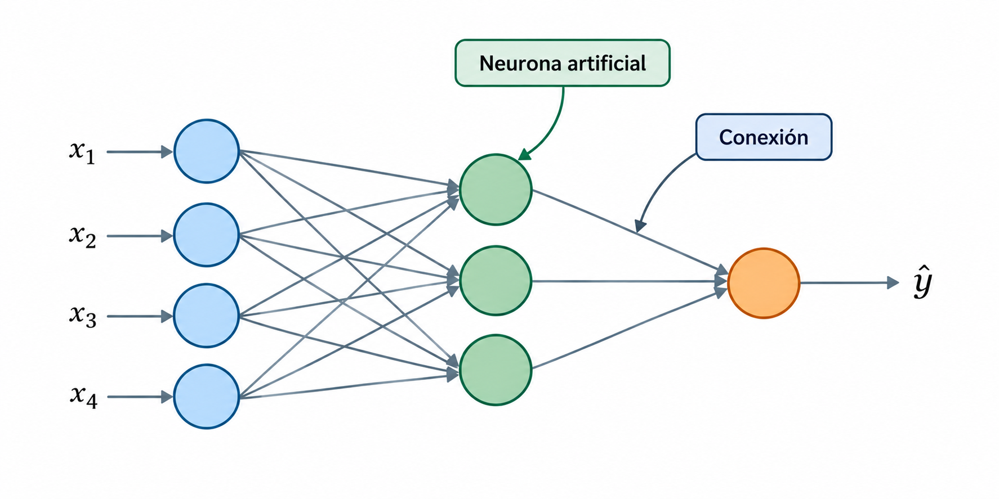
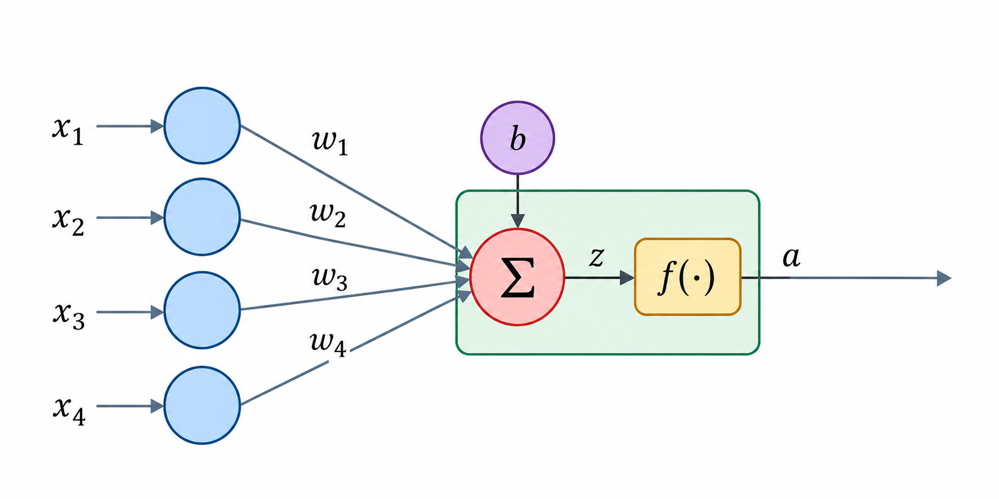
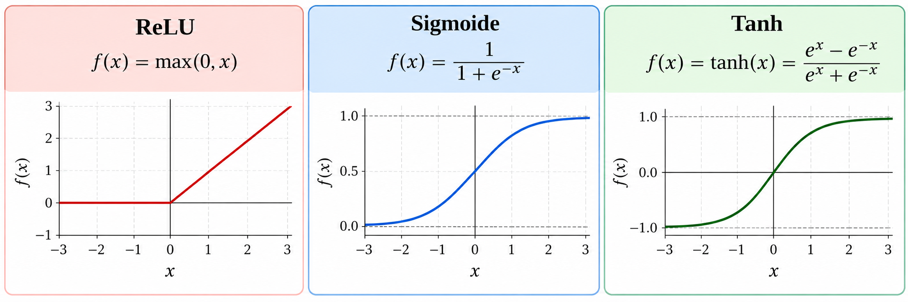
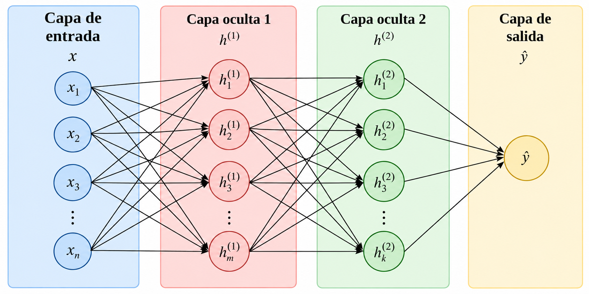
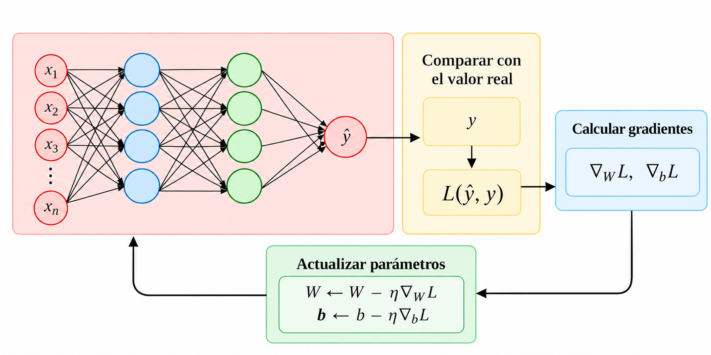

Aprendizaje supervisado
Redes neuronales
Introducción
Las redes neuronales artificiales (Artificial Neural Networks, ANN) son modelos de aprendizaje automático formados por unidades de procesamiento interconectadas, llamadas neuronas artificiales.
Estas unidades realizan operaciones matemáticas sobre los datos y transmiten sus resultados a otras neuronas.

La neurona artificial
Una neurona artificial recibe valores de entrada y calcula una salida.

La neurona artificial
Para hacerlo:
- Multiplica cada entrada \(x_i\) por un peso \(w_i\).
- Suma los productos y agrega un sesgo \(b\).
- Aplica una función de activación \(f(\cdot)\).
La salida puede utilizarse como entrada de otras neuronas.
Modelo matemático de una neurona
Consideremos una neurona con \(n\) entradas:
\[ z = \sum_{i=1}^{n} w_i x_i + b, \quad a = f(z) \]
donde
- \(x_i\): valores de entrada.
- \(w_i\): pesos asociados a las entradas.
- \(b\): sesgo.
- \(f\): función de activación.
- \(a\): salida de la neurona.
Ejemplo
Supongamos que una neurona artificial recibe dos entradas:
\[x_1=2,\qquad x_2=3\]
Los pesos asociados a las entradas y el sesgo son:
\[w_1=0.5,\quad w_2=0.2,\quad b=0.1\]
La neurona utiliza la función de activación ReLU.
Calcula la salida de la neurona.
Ejemplo
Solución:
Primero, calculamos la suma ponderada de las entradas y agregamos el sesgo:
\[ z=(0.5)(2)+(0.2)(3)+0.1=1.7 \]
Después, aplicamos la función de activación ReLU:
\[ a=f(z)=\max(0,1.7)=1.7 \]
Por lo tanto, la salida de la neurona es:
\[ \boxed{a=1.7} \]
Funciones de activación
Una función de activación transforma el valor calculado por una neurona.
Su importancia es que permite introducir no linealidad en el modelo.

ReLU: devuelve cero para valores negativos y conserva los positivos.
Sigmoide: transforma valores al intervalo \((0,1)\)
Tanh: transforma valores al intervalo \((-1,1)\)
Ejemplo
Retomemos el resultado de nuestra neurona:
\[z=1.7\]
Comparemos la salida utilizando las tres funciones de activación:
| Función | Cálculo | Salida \(a\) |
|---|---|---|
| ReLU | \(\max(0,1.7)\) | \(1.7\) |
| Sigmoide | \(\dfrac{1}{1+e^{-1.7}}\) | \(0.846\) |
| Tanh | \(\tanh(1.7)\) | \(0.935\) |
Los mismos pesos, entradas y sesgo pueden producir salidas diferentes dependiendo de la función de activación utilizada.
Arquitectura de una red neuronal
Una sola neurona realiza una transformación relativamente sencilla.
Podemos combinar múltiples neuronas y organizarlas en capas para aprender relaciones más complejas.

Arquitectura de una red neuronal
Una red neuronal típica contiene:
- Capa de entrada: recibe las variables predictoras.
- Capas ocultas: realizan transformaciones intermedias.
- Capa de salida: genera la predicción.
La estructura de la capa de salida depende del problema que queremos resolver.
| Problema | Configuración habitual |
|---|---|
| Regresión | Una neurona con activación lineal |
| Clasificación binaria | Una neurona con sigmoide |
| Clasificación multiclase | Una neurona por clase con softmax |
Redes neuronales feedforward
En una red neuronal feedforward, la información fluye en una sola dirección, desde la capa de entrada hasta la capa de salida.
Las neuronas de cada capa reciben los resultados de la capa anterior, sin conexiones que regresen a capas previas.
- Pueden tener una o varias capas ocultas.
- Cada capa puede contener diferentes cantidades de neuronas.
- Se utilizan en problemas de clasificación y regresión.
Otras arquitecturas de redes neuronales
Existen diferentes arquitecturas diseñadas para procesar distintos tipos de información.
| Arquitectura | Característica principal | Aplicaciones |
|---|---|---|
| Feedforward (MLP) | La información avanza sin ciclos. | Clasificación y regresión |
| Convolucional (CNN) | Utiliza filtros para identificar patrones locales. | Imágenes y visión artificial |
| Recurrente (RNN) | Mantiene información de pasos anteriores. | Secuencias y series temporales |
| Transformers | Utilizan mecanismos de atención para relacionar elementos. | Lenguaje natural y modelos generativos |
Propagación hacia adelante
La propagación hacia adelante (Forward Propagation) es el proceso mediante el cual los datos atraviesan la red para generar una predicción.
En cada capa:
- Se reciben las salidas de la capa anterior.
- Se calculan combinaciones ponderadas.
- Se aplican funciones de activación.
- Se transmiten los resultados a la siguiente capa.
La última capa produce la predicción del modelo.
¿Cómo aprende una red neuronal?
Inicialmente, los pesos y sesgos de la red no representan necesariamente relaciones útiles.
Durante el entrenamiento, la red ajusta estos parámetros para reducir los errores de predicción.

¿Cómo aprende una red neuronal?
El proceso general consiste en:
- Generar predicciones.
- Compararlas con los valores reales.
- Calcular una función de pérdida.
- Calcular los gradientes.
- Actualizar los parámetros.
- Repetir el procedimiento.
Función de pérdida
Una función de pérdida (Loss Function) mide qué tan diferentes son las predicciones respecto a los valores reales. Su elección depende del problema.
Por ejemplo:
- Regresión: error cuadrático medio (MSE).
- Clasificación binaria: entropía cruzada binaria.
- Clasificación multiclase: entropía cruzada categórica.
El objetivo del entrenamiento es encontrar los parámetros que minimicen la pérdida.
¿Cómo reducir la pérdida?
La pérdida depende de los pesos y sesgos de la red.
Podemos representarla como una función de sus parámetros:
\[ L=L(w_1,w_2,\ldots,w_m,b_1,\ldots,b_k) \]
Para reducirla, necesitamos determinar cómo cambia la pérdida cuando modificamos cada parámetro.
Derivadas parciales
Una derivada parcial mide cómo cambia una función respecto a una variable, manteniendo las demás constantes.
En una red neuronal:
\[ \frac{\partial L}{\partial w_i} \]
representa cómo cambia la pérdida cuando modificamos el peso \(w_i\).
- Un valor positivo indica que aumentar el peso incrementa localmente la pérdida.
- Un valor negativo indica que aumentar el peso reduce localmente la pérdida.
- Un valor cercano a cero indica poca sensibilidad local.
Descenso del gradiente
El descenso del gradiente (Gradient Descent) es un algoritmo de optimización que utiliza los gradientes para actualizar los parámetros.
Para un peso:
\[ \boxed{ w_i^{\text{nuevo}} = w_i^{\text{actual}} - \eta\frac{\partial L}{\partial w_i} } \]
donde:
- \(L\): función de pérdida.
- \(w_i\): peso que queremos actualizar.
- \(\eta\): tasa de aprendizaje (learning rate).
La actualización se realiza en la dirección opuesta al gradiente, buscando reducir la pérdida.
Descenso del gradiente
Los sesgos también son parámetros que deben aprenderse durante el entrenamiento.
Su actualización sigue el mismo principio:
\[ \boxed{ b_j^{\text{nuevo}} = b_j^{\text{actual}} - \eta\frac{\partial L}{\partial b_j} } \]
Por lo tanto, el entrenamiento modifica tanto los pesos como los sesgos de la red.
Backpropagation
La retropropagación (Backpropagation) es un procedimiento para calcular los gradientes de la pérdida respecto a los parámetros de una red neuronal.
Para hacerlo, utiliza la regla de la cadena.
- Comienza en la capa de salida.
- Calcula cómo depende la pérdida de sus parámetros.
- Propaga esta información hacia las capas anteriores.
- Obtiene los gradientes necesarios para actualizar los pesos y sesgos.
Backpropagation calcula los gradientes; el optimizador actualiza los parámetros.
La regla de la cadena
La regla de la cadena permite derivar funciones que dependen de otras funciones.
Supongamos que:
\[ L=L(a),\qquad a=f(z),\qquad z=z(w) \]
Entonces:
\[ \boxed{ \frac{\partial L}{\partial w} = \frac{\partial L}{\partial a} \frac{\partial a}{\partial z} \frac{\partial z}{\partial w} } \]
Esta expresión permite calcular cómo influye un peso sobre la pérdida, considerando las operaciones intermedias.
Ciclo de entrenamiento
El entrenamiento combina los conceptos anteriores:
- Forward propagation: calcular predicciones.
- Función de pérdida: medir el error.
- Backpropagation: calcular gradientes mediante la regla de la cadena.
- Optimización: actualizar pesos y sesgos.
- Repetición: continuar hasta cumplir un criterio de parada.
El objetivo es reducir progresivamente la pérdida durante el entrenamiento.
Épocas de entrenamiento
Una época (Epoch) corresponde a una pasada completa por el conjunto de entrenamiento.
Los datos pueden procesarse en grupos más pequeños llamados lotes (batches).
Durante cada lote, el modelo puede calcular predicciones, obtener gradientes y actualizar sus parámetros.
Hiperparámetros
Al igual que otros modelos de aprendizaje automático, las redes neuronales tienen hiperparámetros.
Algunos ejemplos son:
- Número de capas ocultas.
- Número de neuronas por capa.
- Funciones de activación.
- Tasa de aprendizaje.
- Tamaño del lote.
- Número máximo de épocas.
Sobreajuste en redes neuronales
Una red neuronal con demasiada capacidad puede aprender patrones específicos de los datos de entrenamiento que no se generalizan adecuadamente.
Para reducirlo podemos utilizar:
- Regularización.
- Dropout.
- Detención temprana.
- Ajuste de la complejidad del modelo.
Ventajas y limitaciones
Ventajas
- Aprenden relaciones no lineales complejas.
- Pueden utilizarse en clasificación y regresión.
- Permiten construir diferentes arquitecturas.
- Pueden aprovechar grandes conjuntos de entrenamiento.
Limitaciones
- Requieren ajustar varios hiperparámetros.
- Pueden ser computacionalmente costosas.
- Son sensibles al escalado de las variables.
- Su interpretación puede resultar difícil.
Referencias
Preguntas

¿Qué sigue?
En el siguiente notebook utilizaremos Scikit-learn para entrenar una red neuronal artificial mediante MLPClassifier, evaluar su desempeño y analizar cómo influyen diferentes configuraciones de su arquitectura.
Experimentaremos con el número de capas ocultas, la cantidad de neuronas por capa y las funciones de activación.
Modelado de Datos · UACJ